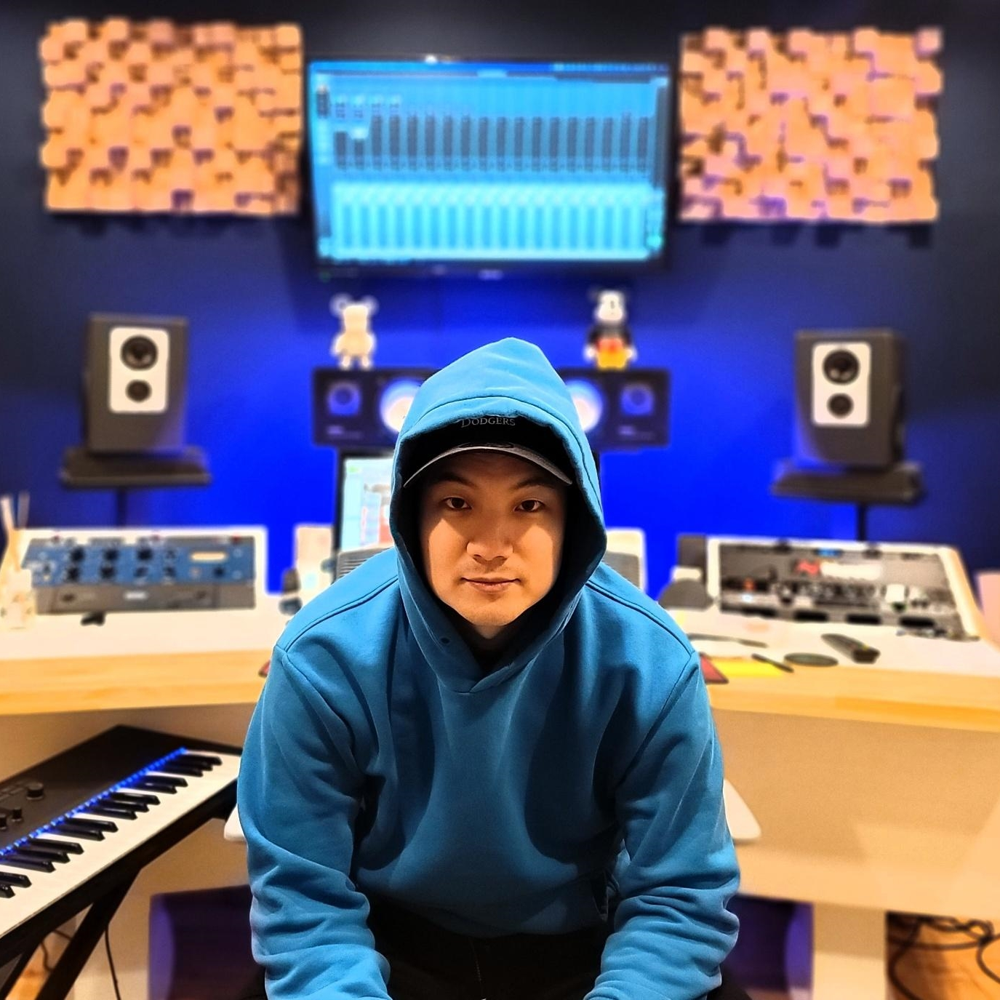
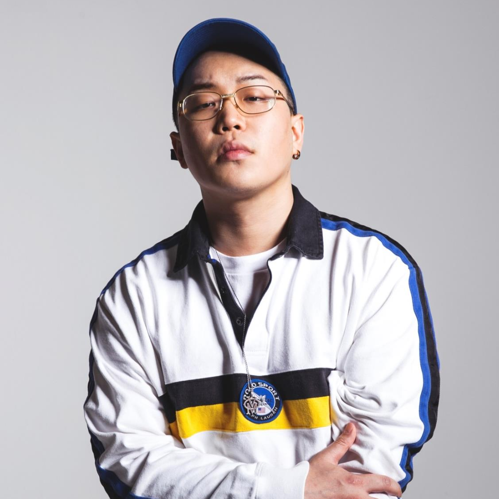
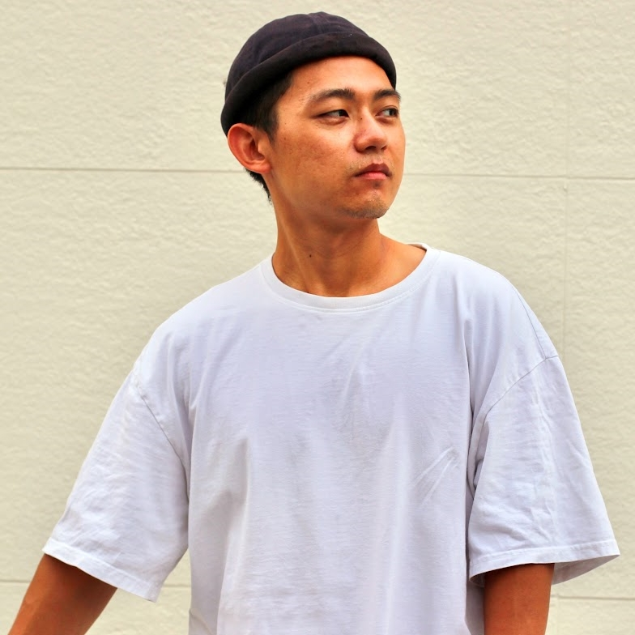
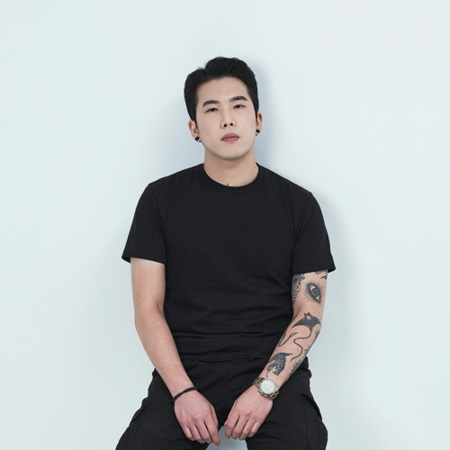
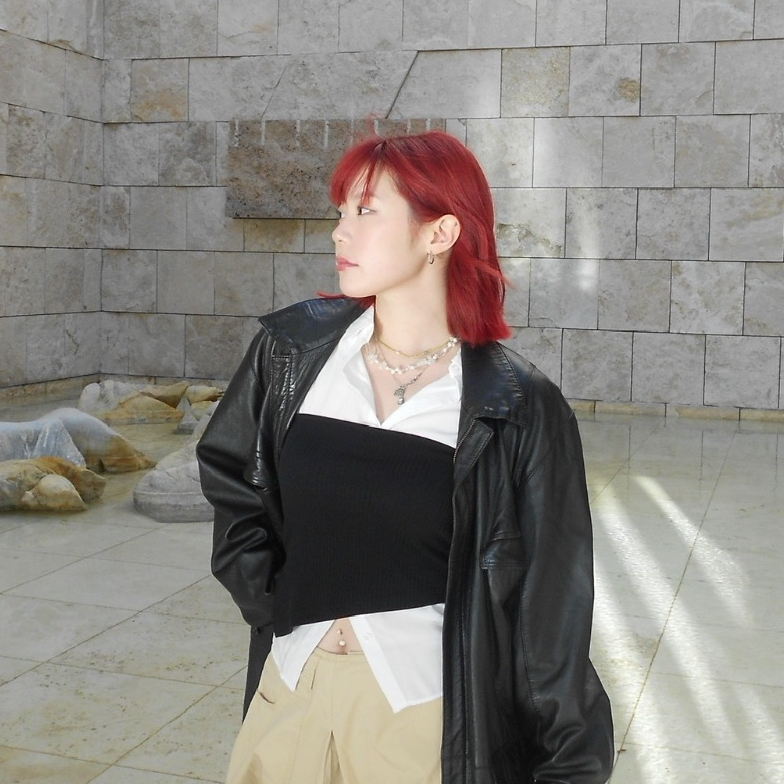

220
Executive Producer
Music Producer
A&R Executive
Biography
Joseph Park, better known by his alias '220', is a multi-platinum music producer and songwriter hailing from Toronto, Canada. He made his debut as a producer/songwriter in 2013 and has since continued to compose songs for some of the biggest K-pop and J-pop artists.
He has produced for a multitude of artists including NCT, EXO's D.O, XG, eaJ, Twice, Eric Nam, Super Junior, GOT7, 2PM, Red Velvet, Taemin, Kyuhyun, J Soul Brothers, Atsushi, U-KISS, Shinhwa, DAY6, and many others.
Currently, Joseph Park serves as the Executive Producer of the International Division and A&R Executive at avex Music Creative, as well as the CEO of UP Music.

WUTAN
Rap Artist
Songwriter
Biography
Wutan is based in Seoul, South Korea and is one of the most sought after songwriters in the K-pop scene. He is an expert in coming up with catchy concepts and hooks. He has penned big hits recently, most notably "NCT U - Baggy Jeans", "NCT 127 - Fact Check", and "NCT DREAM - Yogurt Shake" that have sold over 8 million physical albums worldwide.
WUTAN Discography
2023 NCT 127 - Fact Check
2023 NCT U - Baggy Jeans
2023 NCT U - The Bat
2023 NCT DREAM - Yogurt Shake
2022 신화 WDJ - Come To Life EP
2022 신화 WDJ - BamBiNun Digital Single
2022 XG - Mascara
2022 XG - Tippy Toes
2020 NCT 127 - Kick It
2020 Cravity - Blackout
2020 Cravity - Break All The Rules
2019 MUNCHEESE EP - You had to be there
2017 VISTY BOYZ - VMC Compilation Album
2017 Dope Boys Club - 2nd LP
2015 Gibberish - Digital Single
2014 HOL!DAY - WUTAN & BUGGY EP
2014 ZOORECA - 1st LP
2013 RUN VMC - VISMAJOR Compilation Album
2013 SMTM 2: Part 2 - Please Wait
2013 My Name Is My Name
2013 Take You There

jAngo
Songwriter
Vocal Producer
Biography
jAngo is a singer/songwriter and producer born and raised in Bombay, India. He is an alumni at Berklee College of Music in Vocal Performance. He has worked with notable artists such as eaJ, MAX, Crush, DPR Live, Rich Brian, Seori, and many more as a writer and engineer. He is currently working with avex and UP Music to develop new artists for the future.
jAngo Discography
2023 JHIN - Blue Butterflies
2023 JHIN - You Would
2023 eaJ - Pacman
2022 XG - Mascara
2022 eaJ - Car Crash
2021 BIG Naughty - STAB
2020 DPR LIVE - Jam & Butterfly
2020 MAX - Working for the Weekend
2020 Rich Brian - Love in My Pocket
Upcoming Releases
avex WARPS Project - 3 songs on Debut Album
Van Ruther
Artist
Producer
Biography
Van Ruther is an artist and music producer who has produced for many Korean hip-hop and R&B artists. He started his career as the main producer in a hip-hop label called Vismajor and is well respected within the Korean R&B / Hip-hop scene. He's worked with big names such as Swings, Supreme Team, Geeks, and many more. Now he is focused on bringing his R&B flavor to the K-pop scene and is currently working with a lot of K-pop artists.
Van Ruther Discography
2023 VMC - Vision
2023 TK 정규 - Meaning
2022 딥플로우x프롬올투휴먼 (Feat. TK)
2022 왈로 - Back in my Block (Feat. 조광일)
2022 왈로&쿨에이드 - 무법
2021 넉살&이로한x아산나눔 재단CM송 - Don't Lose
2021 TK정규 - Highway
2021 AQUA WAVE with SEVENTEEN & BTS
2020 딥플로 우정규 4집 - Founder
2018 Mnet '고등래퍼' 이예찬 - March
2017 VMC - 티키타카
2016 장혜진 - Ordinary EP
2016 Mnet 언프리티 랩스타 나다 - Nasty (Feat. 박미경)
BUGGY
Producer
Biography
Buggy started his career in 2013 as a producer / DJ and has worked with many notable artists such as Nucksal, Xikers, JO1 and has also produced songs for the famous shows like Produce 101 and Show Me The Money. He also joined the Vismajor crew as a producer and has produced for many Korean Hip-hop artists. Buggy is well known for his hip-hop production and has several releases slated for 2024.
BUGGY Discography
2023 Kohway - Switchin′ Lanes (Feat.JuvieTrain)
2023 MOVEO the naked - Detox(feat. SkinnyBrown)
2023 로스(Los), 딥플로우, Don Mills - Culture
2022 염따 - 외로아
2022 LoxxPunkman(록스 펑크맨) - 새벽에
2021 VMC - V CYPHER 2021
2021 Rohann이로한 - Dumb Dumb
2021 Rohann이로한 - Good Night
2021 Rohann이로한: 꼴라 (CCOLA) - YOYO
2021 Rohann이로한: 제이호 - Tsunami
2021 Rohann이로한: 물소 - F.A.C.E ID (feat.Rohann)
2021 Rohann이로한: MFMP - WALKIE TALKIE
2021 Rohann이로한: 피식대학, Don Mills - 비공개다이어리
2021 Don Mills던밀스 - MVP
2021 Don Mills던밀스 - F.O.B. Interlude
2021 Don Mills던밀스 - 다이나믹듀오(feat.넉살)
2020 뱃사공 - 777
2020 뱃사공 - GET HIGH & LOW
2020 뱃사공 - 한번인생 2 Live
2020 QM - 36.5 (feat.화지)
2020 QM - 만남조건 (feat.jerd)
2020 QM - Chantey Interlude
2020 QM - 닻(feat.Khundi Panda)
2020 Rohann이로한 - OYE (feat. Don Mills)
2020 Rohann이로한 - LOVE, LIFE

PRION HEART
Producer
DJ
Audio Engineer
Biography
Prion Heart started his career as a band leader in a heavy metal band in high school. From this time, he delved into sound engineering and music production. At the same time he got the opportunity to work in a club where he was exposed to EDM where he found his passion to go deeper into EDM. Prion is currently a DJ and his work has been praised by Diplo, Showtek, and Don Diablo. He has worked with HEXAGON to release original mixes and has ranked #1 on Beatport several times. Prion is using his cutting edge sounds to produce K-pop / J-pop artists, already securing cuts on an upcoming artist.
PRION HEART Discography
PRION HEART - Detail
PRION HEART - Drip (Original Mix)
PRION HEART - Loco Loco (Original Mix)
PRION HEART - Say It Now (Original Mix)
PRION HEART - Over You (Original Mix)
PRION HEART - You Know (Original Mix)
PRION HEART, Bashment YC - Go Back (Original Mix)
Pilament - Kill EP
PRION HEART - Count This Money (Original Mix)
PRION HEART - Musik EP
PRION HEART - Back To You (Original Mix)
Jo Gwang Il - Grow Back (Prod.Pilament)
Jo Gwang Il - If I ain‘t rap
Brown Tigger Busta Bomb (ft.Skull, Koonta)
Equus Recordings Compilation EP ’SCION’
PRION HEART - Rebirth (Original Mix)
PRION HEART & SENTIMAN - Tear It Down (Extended Mix)
Dippin’ Carls & Jinjo Crew Song
BBIC WORLD FINAL 2020 Title Song (뛰어놀아) (Feat.Jo Gwang Il & Brown Tigger)
